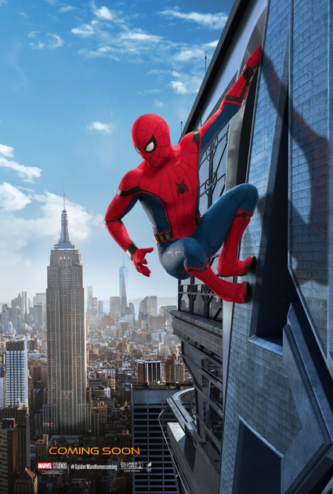
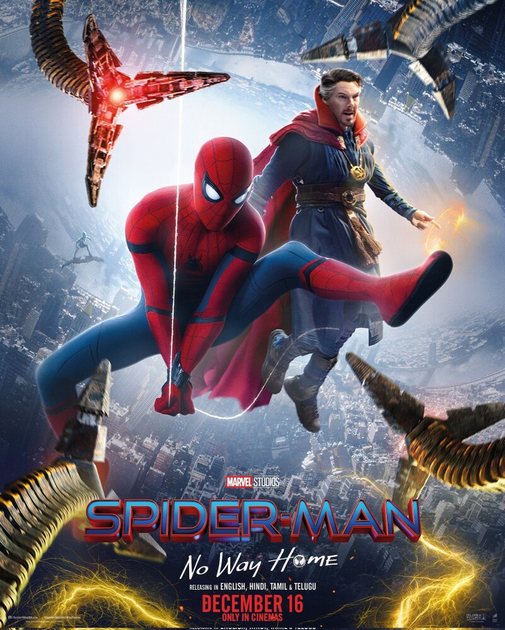
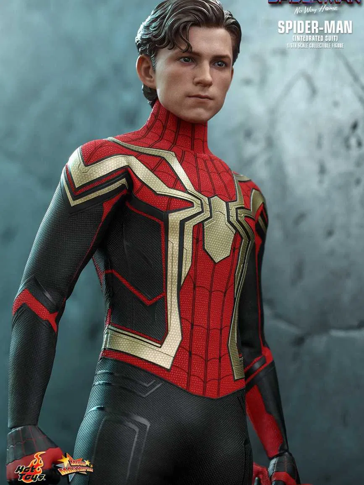

Людина-павук
«Людина-павук» — це історія про підлітка Пітера Паркера, який після укусу генетично модифікованого павука отримує надлюдські здібності. Він починає боротися зі злочинністю під псевдонімом Людина-павук.
Режисер: Сем Реймі



Детальніше про фільм на Вікіпедії